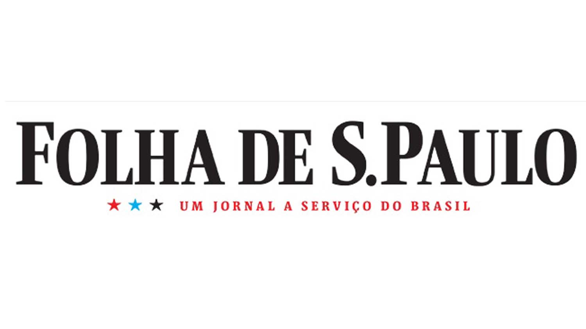

Conclusion about right and left opinion about the reduction in funding for scientific research by the Government:
The assessment objective wandered to understand the
tie of Direita
(right)

[Fig 1]Above is the logo from the newspaper Folha de S.Paulo.and Esquerda(left) in the struggle in Brazil’s science besides
of the government’s decrease of budget. Commonly on Brazil right sized
opinions maintain a conservative way of media, Newspaper, while
liberal opinions feel more freely in Online Magazines. To obtain a
balance throughout the research of this assessment, Folha de S.Paulo
newspaper sourced the conservative opinion and the magazine Cult the
left ideas. Analyzing the contains, right and left have different
ideas about how the government should act but in moments like the
decrease of budget, all agree that the government did a bad decision.
The intellectual people from both sides of the competition for
dominance between right and left know the importance science has to
Brazil’s future.[Fig 2] In red is the logo from the brazilian magazine Cult. All they believe the only way to get out of economic
problems and develop the country is through science. Science is the
passage to make Brazil recognized by the world as a developed country
and this passage has been taken from them. In those moments they fight
together to the hope of their country be saved,
each one on spreading the message in their own way.
 Development
Development